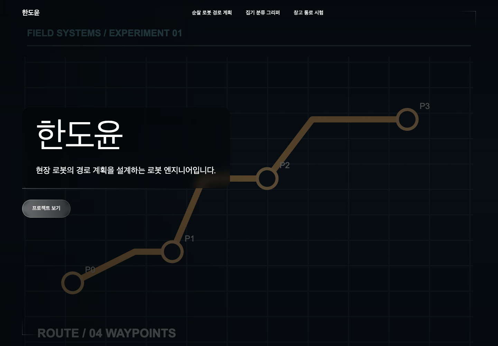
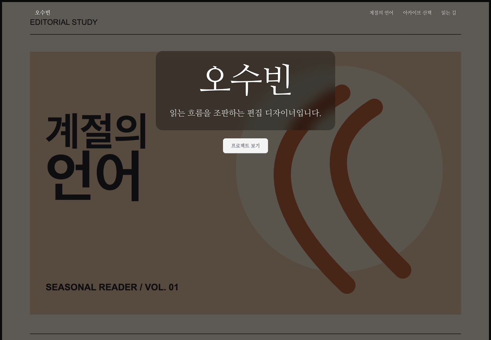
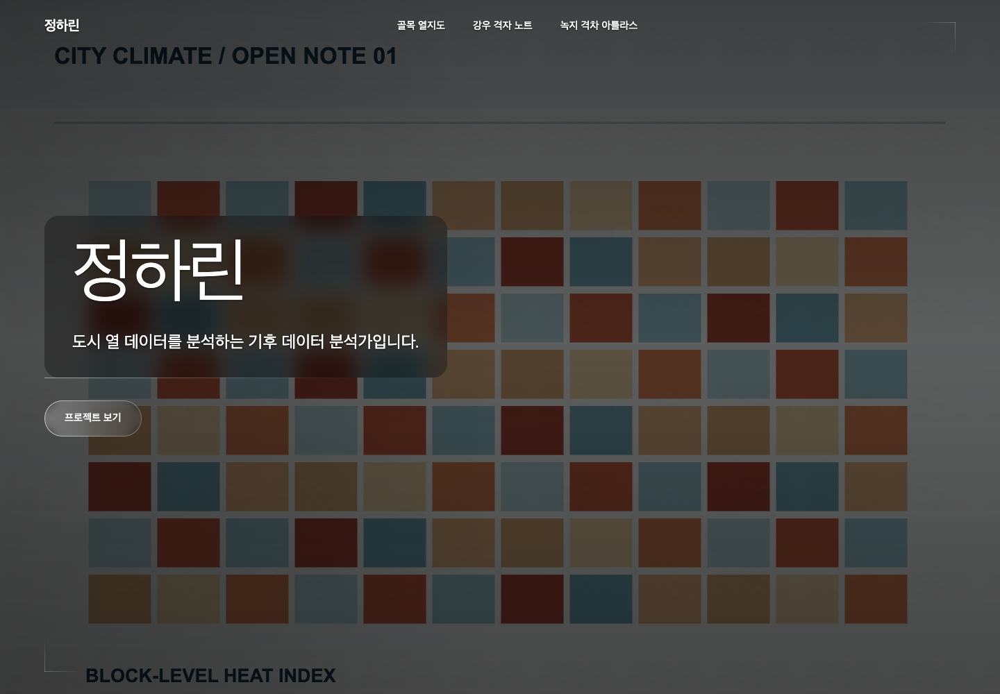

한도윤
로봇 엔지니어 · library
전체 페이지 열기 ↗
같은 생성기와 요청으로 모델이 선택한 지면입니다. 모델을 다시 호출하지 않고 library-selection-2026-10-07의 저장 Spec을 현재 렌더러로 다시 그렸습니다. 인물·프로젝트·이미지는 가상 시험 자료이며, 이미지는 입력 준비 단계에서 만들었습니다.

로봇 엔지니어 · library
전체 페이지 열기 ↗

편집 디자이너 · library
전체 페이지 열기 ↗

기후 데이터 분석가 · library
전체 페이지 열기 ↗